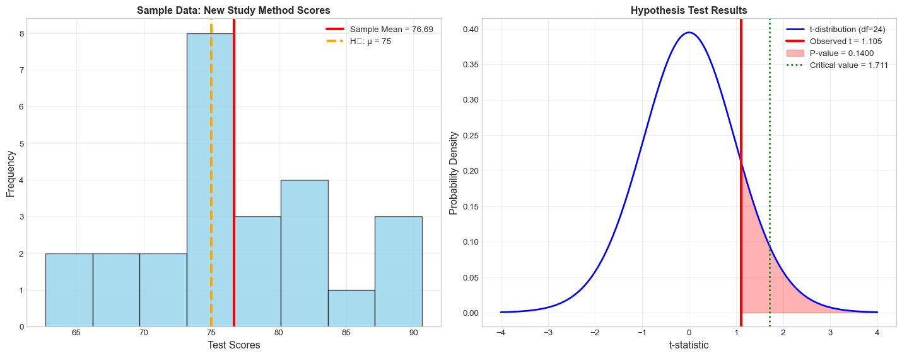

Sample Statistics:
Sample size: 25
Sample mean: 76.69
Sample std: 7.65Hypothesis Testing: Making Decisions with Data
From Questions to Statistical Evidence
Narjes Mathlouthi
📢 Announcements
📝 Quiz 2
When:
- 📅 Date: Friday, July 25
- ⏰ Window: Available 7 AM – 12 AM
- ⏳ Duration: 1 hour (once you begin)
Where:
- 💻 Online on Canvas
Covers:
- 📚 Material from Weeks 3-4
Note:
- 📸 Upload a photo of your written work for some questions
Learning Objectives 🎯
By the end of this lecture, you will be able to:
- Formulate null and alternative hypotheses from research questions
- Understand the logic of hypothesis testing
- Calculate and interpret p-values correctly
- Make decisions using significance levels
- Recognize Type I and Type II errors and their consequences
- Perform common hypothesis tests in Python
What is Hypothesis Testing?
- Hypothesis testing is a statistical method for making decisions about population parameters based on sample data
- It helps us answer questions like:
- “Is this new drug more effective than the current treatment?”
- “Has customer satisfaction improved after our changes?”
- “Are students’ test scores significantly different from the national average?”
Key Idea: We use sample data to make inferences about populations, acknowledging that our conclusions might be wrong due to random variation.
The Courtroom Analogy
Criminal Trial
Presumption: Innocent until proven guilty
Burden of proof: Prosecution must prove guilt
Standard: “Beyond reasonable doubt”
Verdict: Guilty or Not Guilty
Hypothesis Testing
Presumption: Null hypothesis is true
Burden of proof: Data must provide evidence against null
Standard: Significance level (\(\alpha = 0.05\))
Decision: Reject or Fail to Reject H₀
Just like in court, we never “prove” innocence or “accept” the null hypothesis, we only determine if there’s sufficient evidence to reject it.
The Six Steps of Hypothesis Testing
Step 1: State the Hypotheses
- Null Hypothesis (\(H_0\)): The “status quo” or “no effect” statement
- Usually includes “=”, “≤”, or “≥”
- What we assume to be true until proven otherwise
- Alternative Hypothesis (\(H_1\) or \(H_a\)): The research claim we want to test
- Usually includes “≠”, “<”, or “>”
- What we’re trying to find evidence for
Example: Testing if a new teaching method improves test scores
\(H_0: \mu = 75\) (no improvement, scores stay the same)
\(H_1: \mu > 75\) (scores improve with new method)
Types of Alternative Hypotheses

Step 2: Choose Significance Level (α)
- Significance level (α): The probability of rejecting H₀ when it’s actually true
- Common choices: α = 0.05, 0.01, or 0.10
- Interpretation: “We’re willing to be wrong 5% of the time”
How to choose α: - α = 0.05: Standard for most research - α = 0.01: More conservative, when Type I errors are costly - α = 0.10: Less conservative, when Type II errors are costly
Important: Choose α before collecting data to avoid bias!
Step 3: Check Assumptions and Conditions
Common assumptions for many tests:
- Independence: Observations don’t influence each other
- Normality: Data comes from a normal distribution (or n ≥ 30)
- Equal variances: When comparing groups
- Random sampling: Sample represents the population
What if assumptions are violated? - Use non-parametric tests - Transform the data - Use robust methods - Increase sample size
Step 4: Calculate the Test Statistic
- Test statistic: A standardized measure of how far our sample result is from what we’d expect if H₀ were true
- Common test statistics:
- z-statistic: For means when σ is known
- t-statistic: For means when σ is unknown
- χ² statistic: For categorical data
- F-statistic: For comparing variances
Formula for one-sample t-test: \[t = \frac{\bar{x} - \mu_0}{s/\sqrt{n}}\]
Where: \(\bar{x}\) = sample mean, \(\mu_0\) = hypothesized mean, \(s\) = sample standard deviation, \(n\) = sample size
Step 5: Find the P-value

P-value interpretation: “If H₀ were true, what’s the probability of getting a test statistic at least as extreme as what we observed?”
Common P-value Misconceptions
What P-values DON’T tell us
❌ WRONG: “P-value is the probability that H₀ is true”
❌ WRONG: “P-value is the probability of making an error”
❌ WRONG: “1 - p-value is the probability that H₁ is true”
❌ WRONG: “Smaller p-values mean larger effects”
✅ CORRECT: “P-value is the probability of observing this result (or more extreme) assuming H₀ is true”
Step 6: Make a Decision and Interpret
Decision Rule: - If p-value ≤ α: Reject H₀ (statistically significant) - If p-value > α: Fail to reject H₀ (not statistically significant)
Language matters: - ✅ “Reject H₀” or “Fail to reject H₀” - ❌ “Accept H₀” or “Prove H₁” - ✅ “Evidence suggests…” or “Data supports…” - ❌ “H₁ is true” or “H₀ is false”
Types of Errors

Real-World Error Consequences
Type I Error Examples: - Medical: Saying a drug works when it doesn’t - Legal: Convicting an innocent person - Quality Control: Rejecting good products - Marketing: Launching ineffective campaigns
Type II Error Examples: - Medical: Missing a disease diagnosis - Legal: Acquitting a guilty person - Quality Control: Accepting defective products - Security: Missing a threat
The Trade-off: Reducing one type of error usually increases the other. We must balance based on the consequences of each error type.
Statistical Power
- Power (1 - β): The probability of correctly rejecting a false null hypothesis
- What affects power?
- Effect size: Larger effects are easier to detect
- Sample size: More data increases power
- Significance level: Higher α increases power
- Variability: Less noise increases power
Example 1: One-Sample t-test
Research Question: Does a new study technique improve test scores compared to the school average of 75?
Step 1: State Hypotheses - H₀: μ = 75 (new method doesn’t improve scores) - H₁: μ > 75 (new method improves scores)
Steps 2-3: α = 0.05, assume normality (n=25 is borderline, but we’ll proceed)
Example 1: Calculations
Test statistic: t = 1.105
Degrees of freedom: 24
P-value: 0.1400
Decision:
α = 0.05
P-value (0.1400) > α (0.05): Fail to reject H₀
Conclusion: There is insufficient evidence that the new study technique improves test scores.Example 1: Visualization
Using Python for Hypothesis Testing
Using scipy.stats.ttest_1samp:
t-statistic: 1.105
p-value (two-tailed): 0.2799
p-value (one-tailed): 0.1400
Using statsmodels:
t-statistic: 1.105
p-value (one-tailed): 0.1400
degrees of freedom: 24.0Example 2: Two-Sample t-test
Research Question: Is there a difference in test scores between two teaching methods?
Method A (Traditional):
n = 30, mean = 75.45, std = 11.87
Method B (New):
n = 28, mean = 80.72, std = 14.82
Hypotheses:
H₀: μ_A = μ_B (no difference between methods)
H₁: μ_A ≠ μ_B (there is a difference)
Two-sample t-test results:
t-statistic: -1.500
p-value: 0.1392
Decision: Fail to reject H₀ (p = 0.1392 > 0.05)
Conclusion: No significant difference between teaching methods.Two-Sample Test Visualization

Effect Size: Cohen’s d
Cohen's d: -0.394
Effect size interpretation: small
Cohen's d interpretation:
|d| < 0.2: negligible effect
0.2 ≤ |d| < 0.5: small effect
0.5 ≤ |d| < 0.8: medium effect
|d| ≥ 0.8: large effectCommon Hypothesis Tests Summary
Common Hypothesis Tests:
================================================================================
One-sample t-test:
Purpose: Compare sample mean to known value
Data Type: Continuous
Python: stats.ttest_1samp()
Two-sample t-test:
Purpose: Compare means of two groups
Data Type: Continuous
Python: stats.ttest_ind()
Paired t-test:
Purpose: Compare paired observations
Data Type: Continuous
Python: stats.ttest_rel()
One-sample z-test:
Purpose: Compare sample mean (known σ)
Data Type: Continuous
Python: stats.normaltest()
Chi-square goodness of fit:
Purpose: Test if data fits distribution
Data Type: Categorical
Python: stats.chisquare()
Chi-square independence:
Purpose: Test independence of variables
Data Type: Categorical
Python: stats.chi2_contingency()Activity: Practice Problem
Your Turn!
A coffee shop claims their average wait time is 5 minutes. You collect data on 20 customers and find: - Sample mean: 5.8 minutes - Sample standard deviation: 2.1 minutes
Questions: 1. Set up appropriate hypotheses (use α = 0.05) 2. What type of test should you use? 3. Calculate the test statistic and p-value 4. Make a decision and interpret the results 5. What are the practical implications?
Think about: Is this a one-tailed or two-tailed test? What assumptions do you need to check?
Practice Problem Solution
Practice Problem Solution:
========================================
1. Hypotheses:
H₀: μ = 5 (average wait time is 5 minutes)
H₁: μ ≠ 5 (average wait time is different from 5 minutes)
(Two-tailed test - we're testing if it's different, not specifically longer)
2. Test type: One-sample t-test
(Population standard deviation unknown, small sample)
3. Calculations:
t = (5.8 - 5.0) / (2.1 / √20) = 1.704
df = 20 - 1 = 19
p-value = 0.1047
4. Decision:
Fail to reject H₀ (p = 0.1047, α = 0.05)
Conclusion: There is insufficient evidence that wait time differs from 5 minutes.
5. Practical implications:
The actual average wait time appears to be about 5.8 minutes,
which is 0.7999999999999998 minutes longer than claimed.
Management should investigate why wait times exceed the 5-minute target.Common Mistakes and Pitfalls
Avoid These Common Errors
- Confusing practical vs. statistical significance
- Large samples can detect tiny, meaningless differences
- Always consider effect size and practical importance
- P-hacking / Data dredging
- Testing multiple hypotheses until finding significance
- Solution: Adjust α, pre-specify analyses
- Misinterpreting p-values
- P-value ≠ probability that H₀ is true
- P-value ≠ probability of making an error
- Ignoring assumptions
- Check normality, independence, equal variances
- Use appropriate alternatives when violated
- Choosing α after seeing results
- Always set significance level before analysis
- Avoid changing criteria to get desired results
Statistical Significance vs. Practical Significance
Key Lesson: Statistical significance ≠ Practical importance
Left: Tiny effect (0.1) but significant due to large n
Right: Large effect (8.7) but not significant due to small nBest Practices for Hypothesis Testing
- Plan before you collect data
- Pre-specify hypotheses, α level, and analysis plan
- Calculate required sample size (power analysis)
- Check your assumptions
- Use diagnostic plots and tests
- Consider robust alternatives if violated
- Report effect sizes
- P-values don’t tell the whole story
- Include confidence intervals for estimates
- Consider practical significance
- Is the difference meaningful in context?
- What are the costs/benefits of different decisions?
- Be honest about multiple testing
- Adjust for multiple comparisons when appropriate
- Report all tests performed, not just significant ones
Summary: The Logic of Hypothesis Testing
- Start with skepticism (assume H₀ is true)
- Collect evidence (sample data)
- Quantify surprise (how unusual is this result if H₀ were true?)
- Make a decision (is the evidence strong enough to reject H₀?)
- Acknowledge uncertainty (we might be wrong!)
Remember: Hypothesis testing doesn’t prove anything definitively. It provides a framework for making decisions under uncertainty using probabilistic reasoning.
Key Takeaways
- Hypothesis testing helps us make decisions about populations using sample data
- P-values tell us how surprising our data would be if H₀ were true
- Statistical significance ≠ practical importance
- Always check assumptions and consider effect sizes
- Plan your analysis before collecting data
- Be aware of Type I and Type II errors
Next steps: Practice with different types of tests, learn about confidence intervals, and explore more advanced topics like multiple testing corrections and non-parametric alternatives.
Appendix: Python Code Templates
# Template for one-sample t-test
import numpy as np
from scipy import stats
# Your data
data = [...] # Replace with your data
null_value = 0 # Replace with your null hypothesis value
# Perform test
t_stat, p_value = stats.ttest_1samp(data, null_value)
# For one-tailed test, divide p-value by 2
p_value_one_tailed = p_value / 2
print(f"t-statistic: {t_stat:.3f}")
print(f"p-value (two-tailed): {p_value:.4f}")
print(f"p-value (one-tailed): {p_value_one_tailed:.4f}")
# Template for two-sample t-test
group1 = [...] # Replace with your first group
group2 = [...] # Replace with your second group
# Perform test
t_stat, p_value = stats.ttest_ind(group1, group2, equal_var=True)
print(f"t-statistic: {t_stat:.3f}")
print(f"p-value: {p_value:.4f}")
# Effect size (Cohen's d)
def cohens_d(x, y):
nx, ny = len(x), len(y)
dof = nx + ny - 2
pooled_std = np.sqrt(((nx-1)*np.var(x, ddof=1) + (ny-1)*np.var(y, ddof=1)) / dof)
return (np.mean(x) - np.mean(y)) / pooled_std
d = cohens_d(group1, group2)
print(f"Cohen's d: {d:.3f}")
Understanding Data – Hypothesis Testing Lecture © 2025